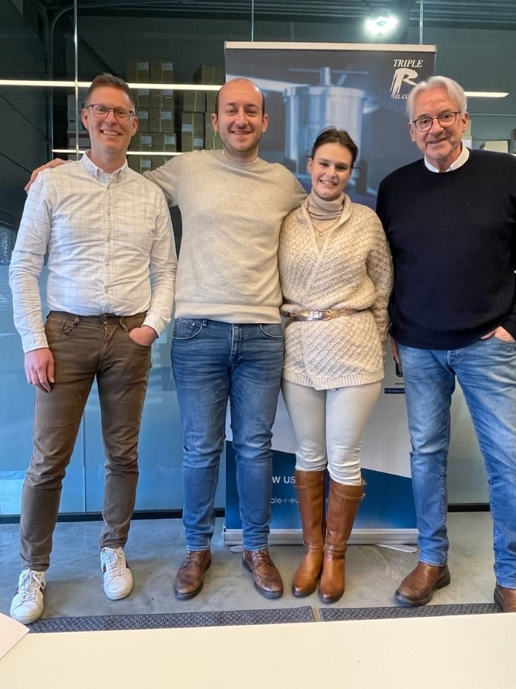

- Home
- Over ons
Over Triple R Europe
Triple R Europe levert vanuit Aartselaar bypass-oliefiltratie aan bedrijven in heel Europa. Wij reinigen olie in plaats van ze te verversen: met filterelementen uit Japan, een eigen assemblage in België en een netwerk van distributeurs dat dicht bij uw machines werkt.
De originele en nog steeds de beste na 45 jaar voortdurende ontwikkeling.
De kwaliteit van onze systemen en hun ongeëvenaarde prestaties maken Triple R al meer dan 40 jaar tot de onbetwiste marktleider.
Wie we zijn
Triple R-oliefiltratie werd in de jaren 1960 ontwikkeld op basis van een Amerikaans octrooi. Het doel was een product dat de levensduur van motorolie in vrachtwagens zou verlengen. Olie moest toen elke 3.000 tot 4.000 km worden ververst. Het allereerste Triple R-filter verlengde dat interval tot 100.000 km.
Productontwikkeling heeft bij ons altijd de hoogste prioriteit gehad. We verbeteren onze producten voortdurend, om filtratie van de hoogste kwaliteit te leveren en in te spelen op veranderende industrieën. Triple R-reinigingssystemen zijn daar een vast onderdeel geworden van de bescherming van machines en systemen die op olie draaien.
Wat we doen
Triple R ontwikkelt bypassfilters die vaste deeltjes, varnish en water uit industriële olie halen. Bedrijven gebruiken ze om hun olie langer te laten meegaan, stilstand te beperken en minder afgewerkte olie te produceren.
Vanuit ons Europese hoofdkantoor in Aartselaar adviseren we klanten, assembleren we systemen en leveren we filterelementen. De filterelementen worden gemaakt door Triple R Industry Co. Ltd. in Japan.

Onze geschiedenis
Jaren 1960
Het eerste Triple R-filter
De heer Russo, ingenieur bij Ford Motor Company, vindt de eerste bypass-oliefilter uit en registreert zijn uitvinding bij het Amerikaanse octrooibureau. Het doel: de levensduur van motorolie verlengen tot 100.000 km.
1974
Productie in Japan
De heer M. Morinaga neemt het octrooi en alle productie- en verkooprechten van Triple R over en richt in Tochigi Triple R Industry Co. Ltd. op, om Triple R-bypass-oliereinigers in Japan te produceren.
1992
Europees hoofdkantoor
Oprichting van Triple R Europe NV in Antwerpen en start van de commercialisering van Triple R in heel Europa.
Europese werkplaats
Oprichting van de Europese werkplaats bij Triple R Netherlands BV in Hengelo, en start van de afdeling Onderzoek, Ontwikkeling en Assemblage in Europa.
2004
ISO-certificering
ISO 14001-certificering, en later, in 2012, ISO 9001-certificering.
2013
Een nieuwe fabriek
Door de wereldwijd stijgende verkoop start Triple R een nieuwe fabriek voor de volautomatische productie van filterelementen in Ohira, Japan.
2019
Nieuw hoofdkantoor
Opening van een nieuw Europees hoofdkantoor in Aartselaar, met assemblagehal en groot magazijn.
Europese assemblage
Contract binnengehaald voor een Europese assemblagefaciliteit.
2020
30 jaar Triple R Europe
Triple R Europe NV, het Europese hoofdkantoor, viert zijn 30-jarig bestaan.
2022
Een nieuwe generatie
Een nieuwe generatie Europees management neemt het over.
Team
Marc Van Uytven is CEO. Maxim Van Uytven is Managing Director. Samen met het team in Aartselaar en de distributeurs in Europa helpen zij u de juiste oplossing voor uw installatie te vinden.